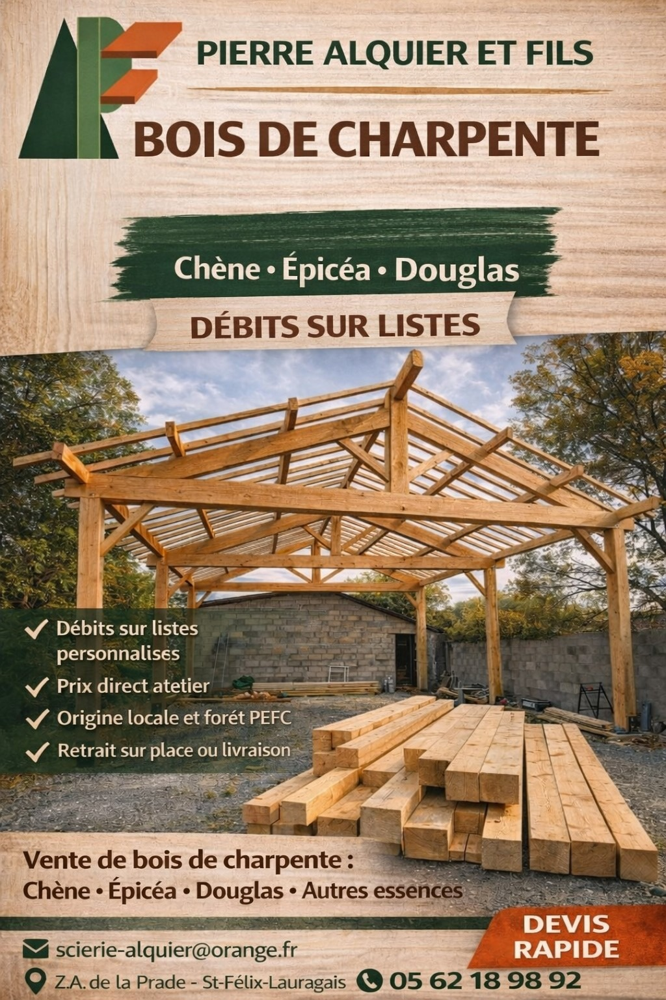
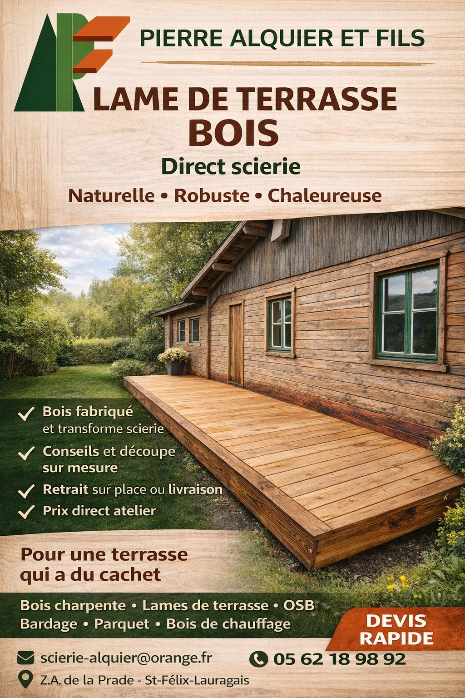
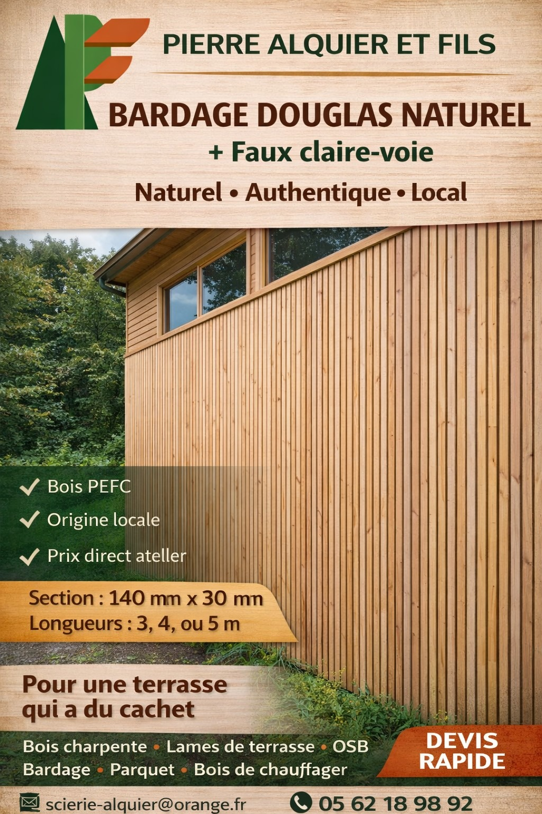
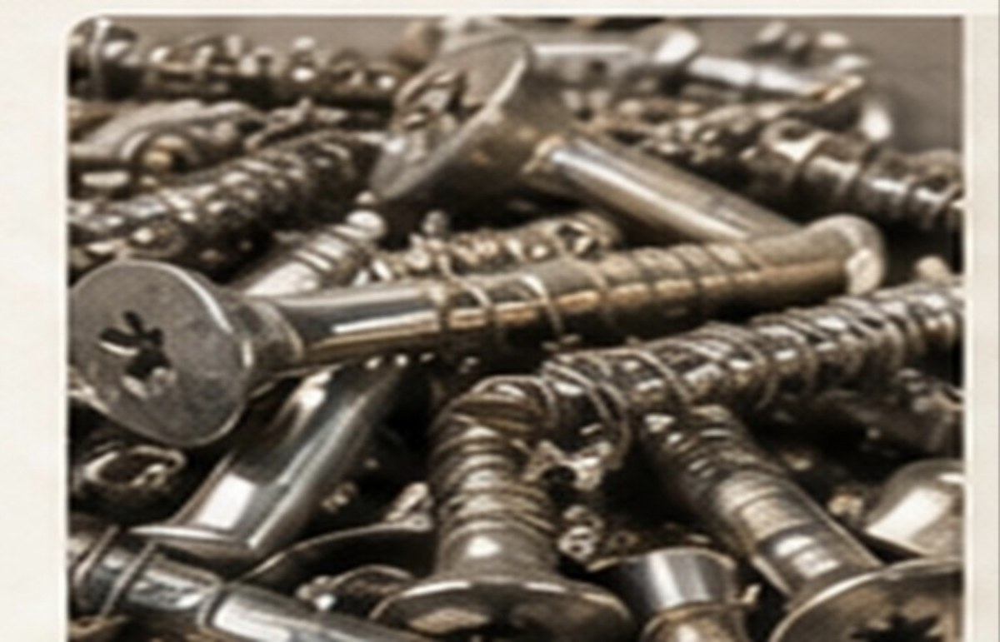
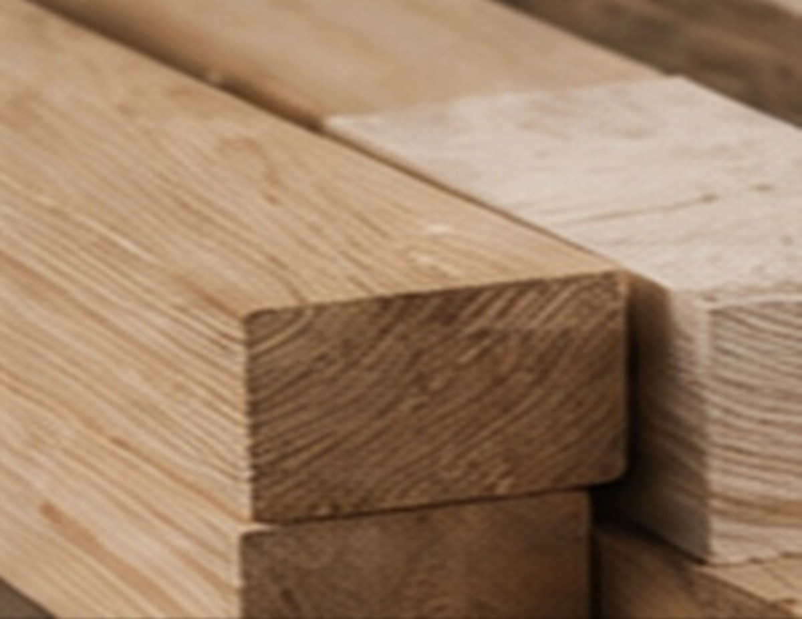
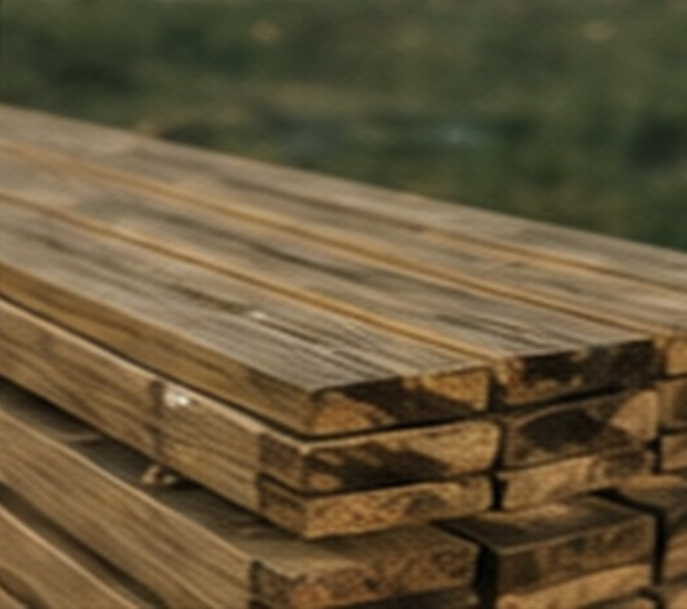
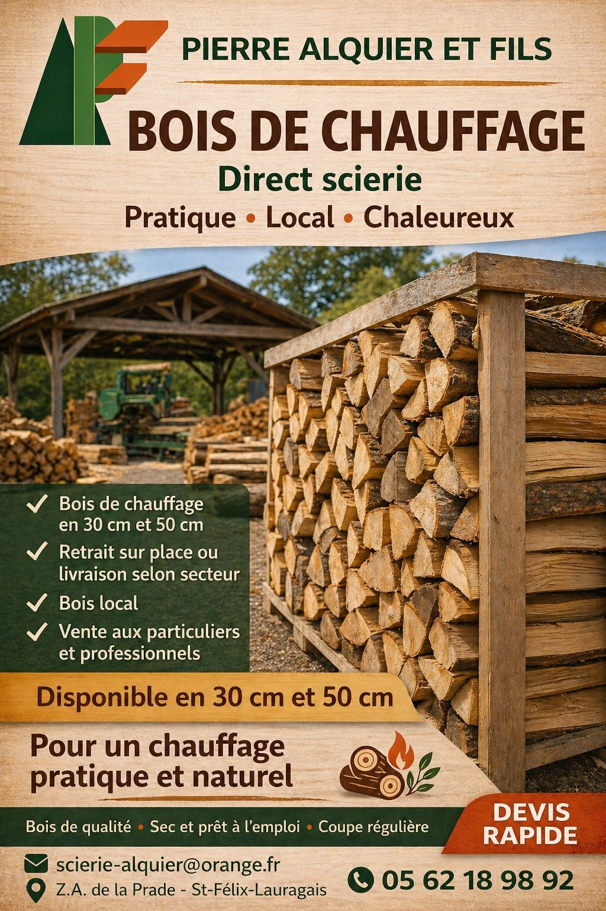

Bois de charpente
Chêne, épicéa, Douglas et autres essences selon disponibilité, pour particuliers et professionnels.
La Scierie Pierre Alquier & Fils accompagne particuliers, artisans et professionnels pour leurs besoins en bois de charpente, bardage, terrasse, sciage au détail, coupe sur mesure, traitement, rabotage, quincaillerie bois et bois de chauffage à Saint-Félix-Lauragais, à 45 minutes de Toulouse.
Appeler la scierie Demander un devisInstallée à Saint-Félix-Lauragais, entre Revel et Castelnaudary, la scierie propose du bois pour la construction, la rénovation, la charpente, l’aménagement extérieur, le traitement, le rabotage, la quincaillerie bois et le chauffage.

Chêne, épicéa, Douglas et autres essences selon disponibilité, pour particuliers et professionnels.

Lames de terrasse bois, conseils et coupe sur mesure selon votre projet.

Bardage Douglas naturel, faux claire-voie et bois pour habillage extérieur.

Sabots de charpente, équerres, connecteurs, visserie terrasse, visserie charpente et fixations bois selon disponibilité.

Rabotage de vos bois selon le besoin, pour une finition plus nette et adaptée à votre projet.

Traitement classe 2 de base. Possibilité également de classe 3 et de classe 4 par autoclave marron sur demande, selon les sections et disponibilités.
Classe 2, classe 3 et classe 4
Bois de chauffage disponible en 30 cm et 50 cm selon stock. Contactez la scierie pour connaître les disponibilités.
Contactez la scierie pour connaître les disponibilités, les dimensions, les essences, les délais et les possibilités de coupe.
La Scierie Pierre Alquier & Fils est située à Saint-Félix-Lauragais, dans le Lauragais, à proximité de Revel, Castelnaudary et Villefranche-de-Lauragais. Elle accueille les particuliers, artisans et professionnels pour leurs besoins en bois local et bois de construction.
Indiquez votre besoin : charpente, bardage, terrasse, coupe sur mesure, sciage au détail, traitement, rabotage, quincaillerie bois, bois de chauffage, dimensions et quantité approximative.